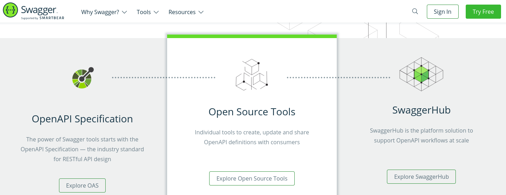

Sammlung von Spezifikationen
Fokus auf Microservices
Ein Standard für Microservices
Sammlung von Spezifikationen
Fokus auf Microservices


Configuration: Einheitlicher Ansatz zur Konfiguration.
Health: Endpunkt für Health, liveness und readiness Checks
Fault Tolerance: Ausfall-Strategie (z.B. Timeouts, Retry Policy, Fallback, Circuit Breaker)
Metrics: Benchmarks auf Fach- und Anwendungsebene
OpenAPI: Beschreibung der REST-Schnittstelle
Rest Client Aufbauend auf JAX-RS, client-funktionalität
OpenTracing: Intrumentation für JAX-RS und CDI
Einheitliche Konfiguration
Worum geht es?
Quarkus-Komponenten konfigurieren - Tipp: ./mvnw quarkus:generate-config
Eigene Optionen definieren und verwenden
Optionen überschreiben (Deployment)
application.properties je nach Umgebung auswerten
Beispiel: Undertow Konfiguration
quarkus.http.ssl.certificate.file=/path/to/certificate
quarkus.http.ssl.certificate.key-file=/path/to/keyZugriff
@ConfigProperty(name = "order.instanceName")
String instanceName;
@ConfigProperty(name = "order.currencySymbol", defaultValue="€")
String currencySymbol;
@ConfigProperty(name = "order.envNotice")
Optional<String> notice;Werte in application.properties
order.instanceName=dev01
order.currencySymbol=NOK
order.envNotice=Sie arbeiten in der Entwicklung@ConfigProperties(prefix = "order")
public class OrderConfiguration {
private String instanceName;
private String currencySymbol = "€";
private Optional<String> notice;
// Getter, Setter - Alternative: public statt private
// Bean-Validation wird unterstützt.
}Verwendung
@Inject
OrderConfiguration orderConfiguration;
@ConfigPrefix("andererPrefixInApplicationProperties"
OrderConfiguration orderConfiguration;Werte in application.properties
order.instanceName=dev01
order.currencySymbol=NOK
order.envNotice=Sie arbeiten in der EntwicklungNach Priorität geordnet (1: Höchste Priorität)
System-Properties
java -Dorder.currencySymbol=NOK -jar target/myapp-runner.jar
./target/myapp-runner -Dorder.currencySymbol=NOK
Umgebungs-Variablen - → Eclipse Microprofile Konventionen
export ORDER_CURRENCYSYMBOL=NOK ; java -jar target/myapp-runner.jar**
export ORDER_CURRENCYSYMBOL=NOK ; ./target/myapp-runner
.env im Working-Directory (Format wie Umgebungs-Variablen)
application.properties im Working-Directory config/application.properties
src/main/resorces/application.property
dev - quarkus:dev
test - Automatische Tests
prod - Default
Eigene Profile Definieren: quarkus.profile
System property: -Dquarkus.profile
Umgebungs-Variable: QUARKUS_PROFILE
Property-Syntax:
quarkus.http.port=9090
%dev.quarkus.http.port=8181ENV-Syntax:
QUARKUS_HTTP_PORT=9090
_DEV_QUARKUS_HTTP_PORT=8181Motivation
Monitoring ermöglichen (icinga, nagios, …)
Monitoring durch Application-Server (kubernetes, …)
Steuerung durch Application-Server
Dependency
<dependency>
<groupId>io.quarkus</groupId>
<artifactId>quarkus-smallrye-health</artifactId>
</dependency>Implementierung
@Health
@ApplicationScoped
public class OldStyleHealthCheck implements HealthCheck {
@Override
public HealthCheckResponse call() {
double dice = Math.random();
HealthCheckResponseBuilder builder = HealthCheckResponse.named("dice");
if(dice >= 0.5) {
builder.up();
} else {
builder.down().withData("valueOfDice", "" + dice);
}
return builder.build();
}
}Vor Microprofile 3.0
Aufruf des Checks
{
"status": "DOWN",
"checks": [
{
"name": "dice",
"status": "DOWN",
"data": {
"valueOfDice": "0.19585549288164417"
}
},
{
"name": "Database connections health check",
"status": "UP"
}
]
}Konzept:
Readiness: Der Service kann aktuell (temporär) Daten verarbeiten / nicht verarbeiten.
Liveness: Der Service is aktiv oder dauerhaft gestört.
Eigenschaften:
Feinere Granularität
Aufruf:
curl http://127.0.0.1:8080/health (kombiniert)
chrome http://127.0.0.1:8080/health-ui (kein Standard)
Liveness: @Liveness
@Liveness
@ApplicationScoped
public class MyLivenessCheck implements HealthCheck {
@Override
public HealthCheckResponse call() {
// Inhalt
}
}Readiness: @Readiness
@Readiness
@ApplicationScoped
public class MyReadinessCheck implements HealthCheck {
@Override
public HealthCheckResponse call() {
// Inhalt
}
}Aufgabenstellung:
Implementieren Sie Readiness und Liveness für den Order-Service
Readiness: Weniger als 42 Bestellungen Status: IN_PROGRESS
Liveness: Keine Bestellung Status: LOST
Testen Sie mit Postman oder Curl
Überprüfen Sie die Ausgabe in der Health-UI
Optional: Implementieren Sie einen klassischen Health-Check dice, der würfelt.
Hinweise:
Im Ordner lesson04-health/lesson04 befindet sich bereits ein Skelett. Es entspricht der Beispiellösung aus Aufgabe 3.4.
Eine Beispiellösung finden Sie im Ordner solutions/lesson04-health/lesson04
Fault Tolerance API: Strategien bei Nicht-Erreichbarkeit
Timeout: Wenn die Antwort ausbleibt
Fallback: Wenn ein Fehler auftritt
Retry: Wie soll ein Aufruf wiederholt werden?
Bulkhead: Isolation lokaler Fehler
Circuit Breaker: fast-fail: Überlast vermeiden
(Asynchronous): Verhalten bei asynchronen Aufrufen
Dependency:
<dependency>
<groupId>io.quarkus</groupId>
<artifactId>quarkus-smallrye-fault-tolerance</artifactId>
</dependency>@GET
@Transactional
@Timeout(250)
@Fallback(fallbackMethod = "sorry")
@Retry(maxRetries = 5)
public List index(){
return this.repository.listAll();
}
// Fallback, index times out
private List sorry(){
return new ArrayList<>();
}Konsequenzen
Nach 250ms wird ein Request abgebrochen
Es werden bis zu 5 Requests durchgeführt
Danach wird die Methode sorry() aufgerufen → leere Liste als Rückgabe
Ziel: Überlast in Fehler-Situationen verhindern
Der Circuit-Breaker definiert Zustände:
Closed state: Der Stromkreis ist geschlossen, Requests werden bearbeitet
Half-open state: Einige Fehler treten auf, Requests werden in der Mehrzahl bearbeitet
Open state: Zu viele Fehler treten auf. Anfragen werden temporär zurück gewiesen
@POST
@Transactional
@CircuitBreaker(successThreshold = 5, requestVolumeThreshold = 4,
failureRatio = 0.75, delay = 1000)
public Response create(/* ... */)){
// ...
}Open state
Für delay = 1000 ms, falls
Von den letzten requestVolumeThreshold = 4
75% (d.h. failureRatio = 0.75) fehlerhaft sind.
Danach: Half open
Half open - so lange bis:
successThreshold = 5 Requests hintereinander erfolgreich waren oder (→ Closed state)
Alternativ: Open state auslöst
Ziel: Überlast im Normalfall verhindern
@Asynchronous
@Bulkhead(value = 5)
private Future doSomething(Order o) {
// ...
}Ziel: Gleichzeitige Ausführung einschränken (semaphore)
Mit @Asynchronous: Thread-Isolation, d.h. value = 5 Threads in Pool
Sonst: Zählende Semaphore, kein eigener Thread-Pool
API Dokumentation
Aufgabenstellung
Implementieren Sie verschiedene Fault Tolerance Strategien für die Order Resource
Index: Nach einem Timeout von 250ms werden Anfragen abgebrochen. Eine Anfrage wird bis zu 5 mal wiederholt. Falls die Anfrage fehl schlägt, wird eine leere Liste zurück gegeben.
Create: Falls die Annahme von 3 der 4 letzten Bestellung fehlschlägt: Keine Annahme für 1s - nach 5 erfolgreichen Annahmen, steht die Annahme wieder voll zur Verfügung.
Update: Es gibt 5 Lieferfahrzeuge, d.h. 5 Pizzas im Status IN_DELIVERY. Beschränken Sie die Auslieferung.
Hinweise:
Im Ordner lesson04-fault-tolerance/lesson04 befindet sich bereits ein Skelett. Es entspricht der Beispiellösung aus Aufgabe 4.1.
Eine Beispiellösung finden Sie im Ordner solutions/lesson04-fault-tolerance/lesson04
Funktion
Fachereignisse als Benchmark exportieren
Optionen
Counter / Meter - Aufrufe zählen
Gauge - "Wasserstands-Anzeiger"; beliebiges Feld
Timer - Ausführungsdauer messen
Dependency
<dependency>
<groupId>io.quarkus</groupId>
<artifactId>quarkus-smallrye-metrics</artifactId>
</dependency>Abfrage
curl -H"Accept: application/json" http://localhost:8080/metrics/application
curl -H"Accept: application/json" http://localhost:8080/metics (auch System-Metrics)
@GET
@Timed(name = "listenAufruf", description = "Ladezeit Startseite", unit = MetricUnits.MILLISECONDS)
public List get(){
// ....
}
@Counted(description = "Anzahl", absolute = true)
public Response create(/* ..*/){ {
// ...
}Ergebnis:
"application": {
"net.gfu.quarkus.endpoints.OrderResource.listenAufruf": {
"p99": 0.0,
"min": 0.0,
"max": 0.0,
"mean": 0.0,
// Weitere statistische Kennzahlen
"meanRate": 0.0,
"count": 0,
"oneMinRate": 0.0
},
"create": 0
}Hinweis: Gauge ist aktuell buggy und wird nicht aufgenommen
Dependency (plattformabhängig)
<dependency>
<groupId>io.quarkus</groupId>
<artifactId>quarkus-micrometer</artifactId>
</dependency>
<dependency>
<groupId>io.micrometer</groupId>
<artifactId>micrometer-registry-prometheus</artifactId>
</dependency>public MyResource(MeterRegistry registry) {
this.registry = registry;
registry.gauge("wasserstand", this, MyResource::getWasserstand);
}
public void doSth() {
Supplier<String> supplier = () -> { // Macht etwas };
return registry.timer("MyResource.doSth").wrap(supplier).get();
}"Recommended" im Quarkus-Guide, aber nicht Teil von Microprofile
Aufgabenstellung
Implementieren Sie verschiedene Metriken für die Order Resource
Index:
Messung der Ladezeit - wie schnell kann die Seite geladen werden (UX)
Create
Umsatz - wie viele Bestellungen gehen ein?
Hinweise
Im Ordner lesson04-metrics/lesson04 befindet sich bereits ein Skelett. Es entspricht der Beispiellösung aus Aufgabe 4.1.
Eine Beispiellösung finden Sie im Ordner solutions/lesson04-metrics/lesson04

OpenAPI:
YAML-basiert
Dokumentenformat zur Beschreibung einer öffentlichen API
Swagger
Tool-Sammlung
Auf OpenAPI aufbauend
Dependency
<dependency>
<groupId>io.quarkus</groupId>
<artifactId>quarkus-smallrye-openapi</artifactId>
</dependency>Aufruf
chrome http://localhost:8080/swagger-ui (GUI)
curl http://localhost:8080/openapi (Abruf)
Ergebnis
openapi: 3.0.3
info:
title: Generated API
version: "1.0"
paths:
/myRessource:
get:
responses:
"200":
description: OK
content:
application/json:
# ...@Tag(name = "OpenAPI Beispiel", description = "Quarkus CRUD Endpunkt")
public class MyResource {
@Operation(operationId = "all", description = "Alle Ressourcen abrufen")
@APIResponse(responseCode = "200", description = "Erfolgreich")
@GET
public List getAll() { /* ..*/ }
@POST
public Response create(
@Parameter(description = "Das Dokument", required = true) MyDoc doc) { /* .. */}
}Weitere Tags, z.B. @OpenAPIDefinition enthalten
Export des OpenAPI-YAML nach adoc, pdf, etc. möglich
Aufgabenstellung
Erstellen Sie ein Aussagekräftige Dokumentation für die Orderesources
Überprüfen Sie das Ergebnis in der Swagger UI
Hinweise
Im Ordner lesson04-openapi/lesson04 befindet sich bereits ein Skelett. Es entspricht der Beispiellösung aus Aufgabe 4.1.
Eine Beispiellösung finden Sie im Ordner solutions/lesson04-openapi/lesson04
Der Quarkus Rest-Client
Umsetzung des Microprofile REST client
Alternative zum JAX-RS Client
Integration in Quarkus
Vorteile: Konfiguration, einfache Integration
Asynchrone Aufrufe
Mock-Server
<dependency>
<groupId>io.quarkus</groupId>
<artifactId>quarkus-rest-client</artifactId>
</dependency>
<dependency>
<groupId>com.github.tomakehurst</groupId>
<artifactId>wiremock</artifactId>
<scope>test</scope>
<version>${wiremock.version}</version>
</dependency>
<!-- Auch fuer Server benoetigt, d.h. bereits vorhanden -->
<dependency>
<groupId>io.quarkus</groupId>
<artifactId>quarkus-resteasy-jsonb</artifactId>
</dependency>package net.gfu.quarkus.client;
@Path("/hw")
@RegisterRestClient
public interface HelloWordService {
@GET
@Path("{name}")
@Produces("application/json")
GreetingMsg getByName(@PathParam String name);
public static class GreetingMsg {
public String message;
}
}# Your configuration properties
net.gfu.quarkus.client.HelloWordService/mp-rest/url=http://localhost:8081
net.gfu.quarkus.client.HelloWordService/mp-rest/scope=javax.inject.Singleton@Path("/myRes")
public class MyResource {
@RestClient
@Inject
HelloWordService service;
@GET public String index() {
return service.getByName("MyResource");
}
}Aufgabenstellung
Erstellen Sie einen seperaten Franchise-Service, der auch Pizza-Bestellungen anzeigt.
Erstellen Sie ein weiteres Quarkus-Projekt franchise.
Der Service hat die Operation `index(). Die Rückgabe ist wie folgt:
{
"pizzaOrders" : [] /* Die Liste des Order-Services */
}Hinweise
Der Eintrag quarkus.http.port=8080 in der Datei application.properties bestimmt den HTTP-Port ‒
mvn compile quarkus:dev -Ddebug=5006 den Debug-Port.
Im Ordner lesson04-restlclient/lesson04 befindet sich bereits ein Skelett, jedoch nur für einen Service
Eine Beispiellösung finden Sie im Ordner solutions/lesson04-restclient/. Das Beispiel enthält beide Projekte
Warum Tracing?
Herausforderung Verteiltes System
Requests durchlaufen verschiedene Services
Jeder Service führt individuelles Protokoll / Log
Welche Protokoll-Einträge gehören zusammen? Was gehört alles zu einem Request?
Ansatz: Request correlation
ID an Requests initial vergeben
ID beim Aufruf anderer Services weiterreichen
ID loggen
<dependency>
<groupId>io.quarkus</groupId>
<artifactId>quarkus-smallrye-opentracing</artifactId>
</dependency>Konfiguration - application.properties
quarkus.jaeger.service-name=franchise
quarkus.jaeger.sampler-type=const
quarkus.jaeger.sampler-param=1
quarkus.log.console.format=%d{HH:mm:ss} %-5p traceId=%X{traceId}, parentId=%X{parentId}, spanId=%X{spanId}, sampled=%X{sampled} [%c{2.}] (%t) %s%e%nLogger mit Trace-Ausgabe
import org.jboss.logging.Logger;
public class FranchiseResource {
private static final Logger LOG = Logger.getLogger(FranchiseResource.class);
public String index() {
LOG.info("Index called");
return "index";
}
}Beispiel (Korrelation während der Auswertung)
13:20:11 INFO traceId=1336b2b0a76a96a3, parentId=0, spanId=1336b2b0a76a96a3, sampled=true [or.ac.qu.TracedResource] (executor-thread-63) hello
Installation
docker run \
-p 5775:5775/udp -p 6831:6831/udp -p 6832:6832/udp -p 5778:5778 -p 16686:16686 -p 14268:14268 \
jaegertracing/all-in-one:latestAufgabenstellung
Verfolgen Sie requests zwischen Franchise und Order-Service aus der letzten Ausgabe.
Erweitern Sie beide Projekte und nutzen Sie die OpenTracing API
Loggen Sie, wenn die index-Methode aufgerufen wird. Beobachten Sie die IDs
Verfolgen Sie den Franchise-Request in Jaeger
Hinweise
Der Eintrag quarkus.http.port=8080 in der Datei application.properties bestimmt den HTTP-Port ‒
mvn compile quarkus:dev -Ddebug=5006 den Debug-Port.
Im Ordner lesson04-tracing/lesson04 befindet sich bereits ein Skelett, basierend auf der vorherigen Aufgabe.
Es enthält den Franchise- und den Order-Service.
Eine Beispiellösung finden Sie im Ordner solutions/lesson04-tracing/.
Integration von Jaeger in Elastic-Search: https://logz.io/blog/jaeger-and-the-elk-stack/